O Sonhar é além do lugar escuro para onde vamos quando fechamos os olhos. É o inconsciente coletivo materializado. Cada criatura mítica, cada pesadelo irracional e cada deus esquecido pela nossa cultura nasceram e habitam no reino do Sonho. Quando dormimos, estamos apenas visitando esse lugar
Ele é Morpheus para os gregos, Kai'ckul na África, o Moldador para as fadas... o único lugar onde a palavra Sandman domina é na capa da HQ. É um lembrete sutil de que para um ser mais velho que o universo, nossas 75 edições de HQ são apenas um fragmento de sua história
Em Sandman, os maiores embates são dialéticos.
Quando Morpheus desce ao inferno para recuperar seu
elmo, ele duela com o demônio Choronzon usando apenas conceitos.
E ele não vence pela destruição,
mas pela capacidade de recriar e resistir.
No fim do duelo, quando o demônio diz ser "a anti-vida, a fera do juízo final", Morpheus responde:
Eu sou a esperança.
Em quase todas as línguas humanas, a palavra "Sonho" significa tanto o devaneio noturno quanto os
nossos projetos para o futuro.
No fundo, o caos da noite e a fé no amanhã são a mesma força.